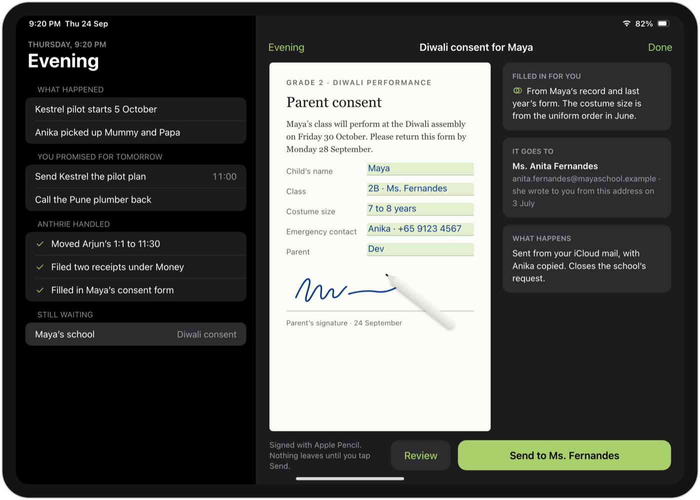
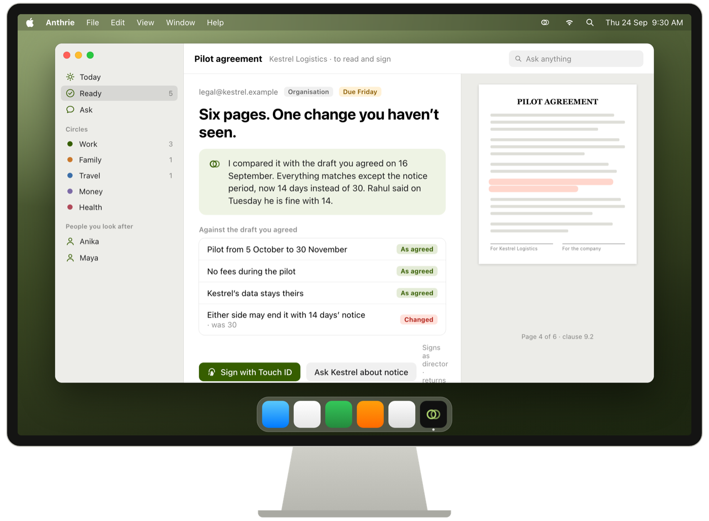
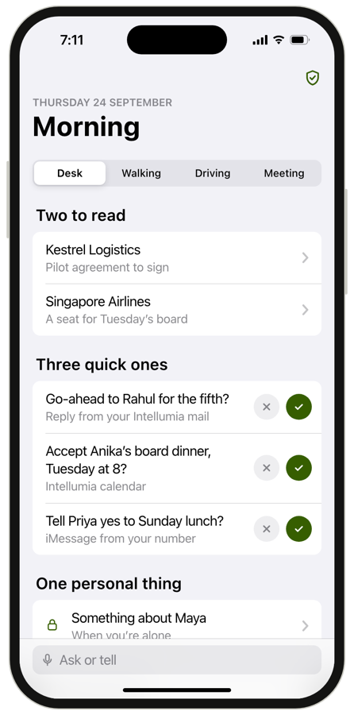
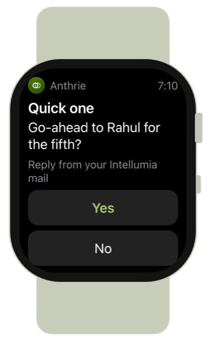
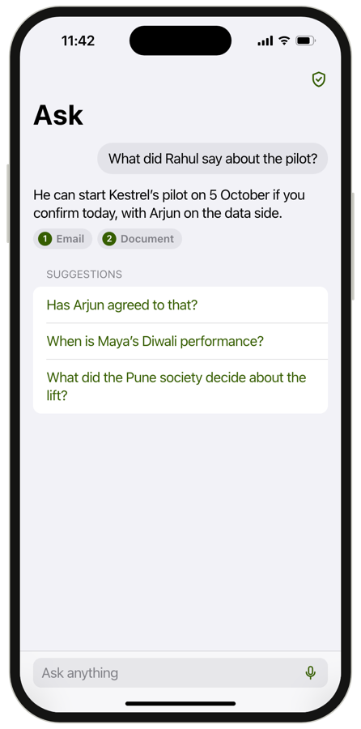
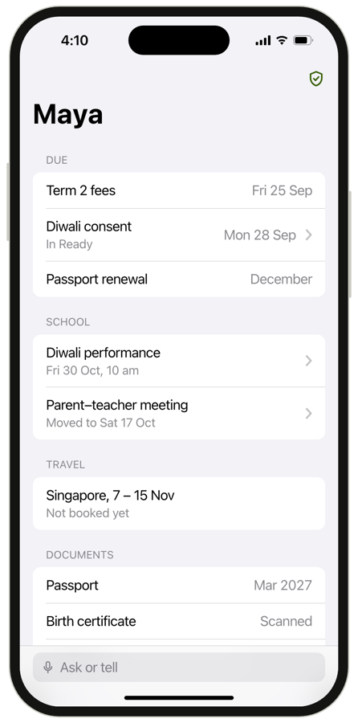
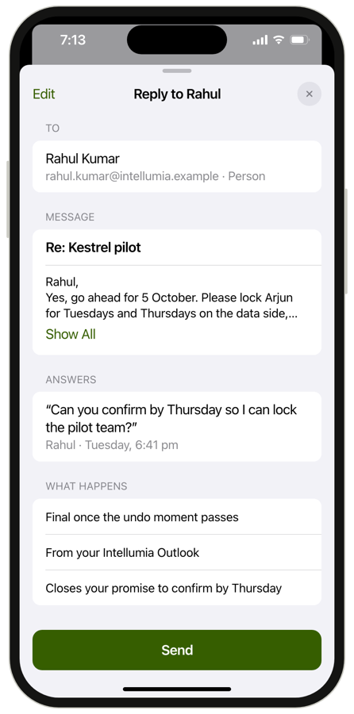
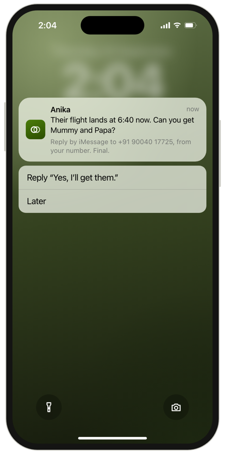
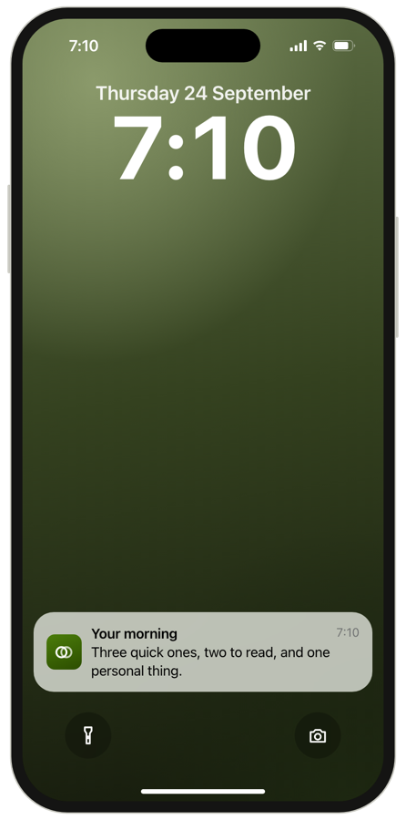
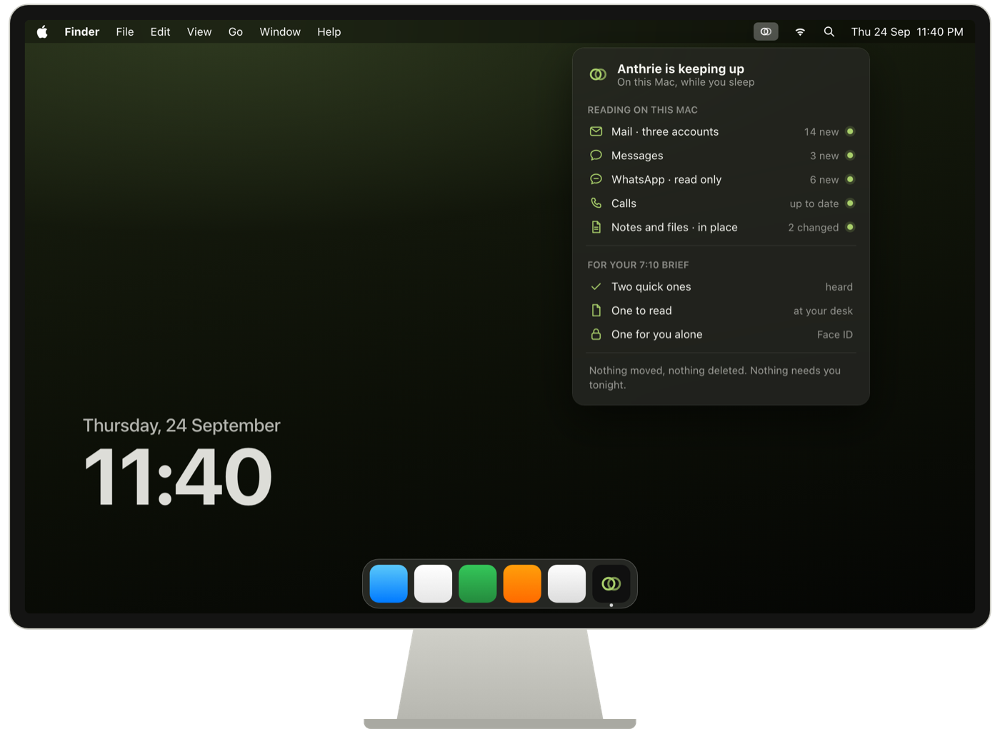

The brief
What needs you, and nothing else.
Grouped the way a good assistant would bring it to you.
- Quick ones you can answer in a word
- To read when you're at your desk
- For you alone — opens with Touch ID
Early access · for Mac
Anthrie reads what's already on your Mac — mail, messages, calendar, notes and files — keeps track of every promise, and brings you only what needs you. Everything stays on your Mac.
Free in early access · Mac with Apple silicon · iPhone, Watch and iPad to follow




The problem
Work mail and personal mail, WhatsApp and Messages, the school portal, the bank, the airline. Each wants your attention; none sees the whole of your life. So things slip.
The go-ahead you meant to send on Tuesday. Said in a meeting, forgotten by Friday.
Reading, filing and chasing — at 11:48 pm, instead of living.
Your daughter's school form, due yesterday, under forty newsletters.
How it works
No questionnaires, no settings to fill in. Anthrie learns from what's already on your Mac.
Mail, Messages, calls, Calendar, Notes, the folders you pick — each with why it's read and what Anthrie never does with it.
The circles of your life — work, family, money, travel — and who matters in each, from how you actually live.
A short brief, answers to your questions, and records for the people you look after. The rest can wait.
What it does
The brief
Grouped the way a good assistant would bring it to you.
Ask
“What did Rahul say about the pilot?” “When is Maya's vaccination?” Anthrie searches your mail, messages, notes and files on your Mac.

People you look after
Your child's school, your partner's visa, your parents' insurance — gathered from what you already receive into a record for each of them.

One informed tap
Replies drafted in your voice, forms filled in, meetings prepared. Anything that commits you waits for one tap — and you always see who it goes to, what it says, why, and what happens next.

A day with Anthrie
One founder's Thursday — probably a lot like yours.


Privacy
Anthrie is only useful if you can trust it with everything. So it's built to be trusted.
It reads things where they are, and keeps what it learns on your Mac, encrypted with a key only your Mac holds.
No person reads your data — not even us. Never sold, never used for ads, never used to train AI.
Switch any source off, see what each was used for, and erase everything in one click.
In early access it only reads. Later, anything that commits you waits for your tap.
Built for Apple
Anthrie is built only for Apple, on purpose: the Mac can read your mail, messages, calls and files in place — things no phone app is allowed to see.

The engine. Reads and prepares, even while you sleep.
Your brief and your answers, in your pocket.
The quick ones, yes or no, on your wrist.
The day wrapped up, and forms signed with Pencil.
Use Gmail or Outlook? Connect the account to your Mac once, and keep reading it wherever you like. iPhone, Watch and iPad arrive during early access.
Why we're building this
“I run a company and a family, across two countries and too many inboxes. I didn't need another app. I needed someone who knew my life, kept my promises, and only interrupted me when it mattered. So we're building it — and it had to be something I'd trust with everything.”Sundeep Kumar, founder, Intellumia
Questions
Yes. Early access runs on a Mac with Apple silicon (M1 or later) on macOS 26. iPhone, Apple Watch and iPad follow.
Yes. Add the account to your Mac once (System Settings › Internet Accounts) and keep reading it wherever you like. Your Mac keeps a copy Anthrie can read.
No. In early access everything stays on your Mac, encrypted. Anthrie uses Apple's on-device model; no server of ours sees your data.
Not in early access — it only reads. It never sends, pays, signs or deletes.
Early access is free.
Early access · for Mac
We're inviting a few people at a time, and building Anthrie with every one of them.
Request early access